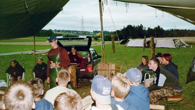
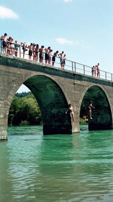
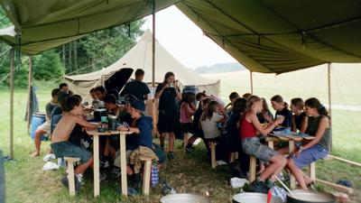

Auch dieses Jahr führte die Pfadi Buchs mit 40 Kindern das traditionelle Sommerlager durch. In Wohlen bei Bern schlugen die 11 – 15 Jährigen ihre Zelte auf und verbrachten dort zwei erlebnisreiche Wochen.

Begonnen hatte alles am Samstag dem 6. Juli. Bei der Loki am Bahnhof Buchs versammelten sich die 40 Lagerteilnehmer der zweiten Stufe der Pfadi Alvier Buchs, ihre drei Leiter und die Küchenmannschaft. Nach dem gemeinsamen Begrüssungs-Ruf ging es per Zug und Bus auf nach Wohlen bei Bern, genauer gesagt nach Illiswil, einem kleinen Ort, nur wenige Kilometer von unserer Hauptstadt entfernt.Auf dem grossflächigen Lagerpatz angekommen stellten die Kinder als Erstes ihre Zelte auf und nisteten sich gemütlich darin ein, während es natürlich bereits leicht zu regnen begann. Zum Glück verzogen sich die Wolken schnell wieder und man verbrachte eine erste Lagerwoche mit traumhaftem Sommerwetter.
Die ersten beiden Lagertage vergingen damit, dass die allgemeinen Lagerbauten wie zum Beispiel Toilette, Waschanlage, Esszelt samt Tischen und Bänken, sowie die Küche aufgebaut wurden. Später errichteten die Pfadis gruppenweise ihre sogenannten „Fählibauten“ und erkundeten die nähere Umgebung durch einen Orientierungslauf.
Am Dienstag wurde man bei wiederum heissem und schönen Wetter dem Lagermotto „Indianer“ gerecht und fertigte aus einfachen Holzstämmen fünf richtige Marterpfähle. Diese wurden am Nachmittag farbig bemalt und im Laufe des Lagers in einem Kreis rund um das Lagerfeuer errichtet.
Bereits am Mittwoch nach dem üblichen Morgenturnen stand ein erstes Highlight auf dem Programm: Der allseits beliebte „Hike“. Dabei geht es darum, gruppenweise in einem kleinem Dorf eine Schlafmöglichkeit zu suchen und verschiedene Aufgaben zu lösen. Während die eine Gruppe in einem Heustall übernachten durfte, logierten andere in einem Hotel-Speisesaal oder bei einer netten Familie. Zu den Aufgaben gehörte es unter anderem, die Unterschrift des Bürgermeisters zu bekommen, was sich als nicht ganz leicht heraus stellte, da gar nicht alle Orte einen solchen hatte... Die zweite Nacht des „Hikes“ verbrachten alle Gruppen im selben Dorf. Die Gerüchteküche brodelte und so veranstalteten die „Fähnchen“ (kleine, feste Gruppen) selbständig eine kleine Nachtübung für die Leiter.

Am Freitag, nachdem sich alle wieder auf dem Lagerplatz eingefunden hatten, wurde am Nachmittag gebadet und die Sonne genossen. Viele der Pfadis sprangen gar von einer etwa sieben Meter hohen Brücke ins Wasser, was natürlich die Aufmerksamkeit der anderen Badegäste auf sich zog.Die für das Wochenende angesagte Zweitages-Wanderung musste dann leider wegen des schlechten Wetters abgesagt werden. Dafür besichtigte man endlich ein wenig die Stadt Bern und genoss das Stadtleben.
Vom Sonntag auf den Montag war „Überlebenstag“ angesagt. Wieder ging es „fähnchenweise“ weg vom Lagerplatz, dieses Mal aber zur Übernachtung im Freien. Da der Besuch von ungebetenen Gästen vorausgesagt wurde, wappneten sich die Pfadis mit Fallen und selbstgebastelten Waffen gegen den nächtlichen Überfall. Vor allem eine Gruppe Mädchen wehrte sich sehr erfolgreich gegen die Eindringlinge. Einige der „Angreifer“ trugen deutliche Spuren davon, was natürlich zurück auf dem Lagerplatz einiges Gelächter verursachte...
Am Dienstag wurde bei halbwegs trockenem Wetter die jährliche Lager-Olympiade durchgeführt. Am Morgen wurde die beste Gruppe, am Nachmittag der beste Einzelteilnehmer gesucht. Bei verschiedenen Posten wie zum Beispiel „Blachen-Taxi“, „Kleiderschlange“, „Wassertrinken“, „Wettessen“, „Baumstamm-Werfen“, „Kimspiel“ oder „Chriesischtai-Spucken“ wurde die Geschicklichkeit und Schnelligkeit der Pfadis auf die Probe gestellt.
Am Abend wurde eine weitere Lager-Tradition gepflegt, das sogenannte „Lager-Gericht“. Während des Lagers haben die Teilnehmer die Möglichkeit, Andere wegen mehr oder weniger schweren „Verbrechen“ anzuklagen. Beim „Lager-Gericht“ wird dann über die Angelegenheit verhandelt und Urteile gesprochen. Mit lautem Gelächter und anderen komischen Geräuschen ging auch dieser Lagertag seinem Ende entgegen.

Ein Blick aus dem Zelt verriet den Leitern am Mittwochmorgen, dass dieser Tag unter dem Stichwort „gemütlich“ laufen würde: Es regnete aus Kübeln und kein Ende war abzusehen. So liess man die Teilnehmer eine Stunde länger als geplant ihre warmen Schlafsäcke geniessen und auch den Rest des Morgens konnten die Pfadis grösstenteils in ihren gemütlichen Zelten verbringen. Auf dem „Hike“ und auf dem „Naturtag“ hatten die verschiedenen Gruppen nämlich kurze Indianer-Hörspiele aufgenommen und verschlüsselte Geschichten geschrieben. Nachdem unter den „Fähnchen“ getauscht worden war, beschäftigten sich die Pfadis mit Hören und Entschlüsseln.Nach dem Mittagessen ging es dann trotz des ungemütlichen Wetters nach Draussen, Schlamm-Rugby war angesagt. Zwar verwandelte sich die nasse Wiese nicht in Schlamm, doch dreckig, nass und ausgepumpt kehrten die Pfadis dennoch von diesem Spiel zurück.
Am Donnerstag stand ein Geländespiel auf dem Programm, bei dem die Teilnehmer sich in drei Gruppen um Gold und Stahl stritten. Das Spiel erschwerte sich durch die Schwankungen der Börse, und auch das Kochen des Mittagessens gestaltete sich für die Pfadis nicht ganz einfach, war doch das Holz im Wald noch ziemlich nass und feucht. Nichtsdestotrotz gelang den Jugendlichen auch dies und am Nachmittag vergnügten sie sich bei einem grossen „Räuber und Pol“.
Abends sass man dann einmal mehr ums Feuer und die Gruppen führten ihre „Stammes-Tänze“ vor und man ruinierte sich noch die letzten vorhandenen Stimmbänder bei lautem Gesang und gelegentlichem Gebrüll.
Schon war der zweitletzte Tag angebrochen und es ging darum, das ganze Material wieder einzusammeln, zu verpacken und zu verladen. Am Samstagmorgen musste dann nur noch der Platz „gfätzelt“ werden und schon war man wieder auf der Heimreise. Dreckig und müde – aber auch glücklich und zufrieden verabschiedete man sich dann mit einem lauten „Tschi-ai-ai“ bei der Loki am Bahnhof Buchs.
Panda